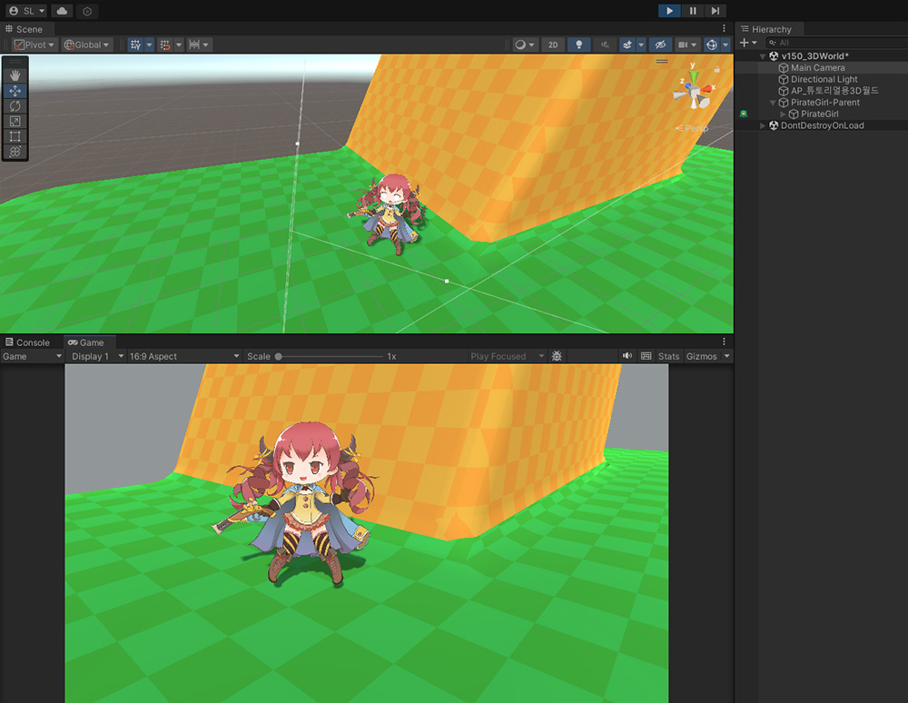
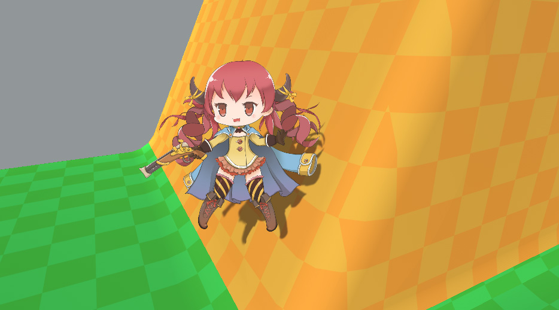
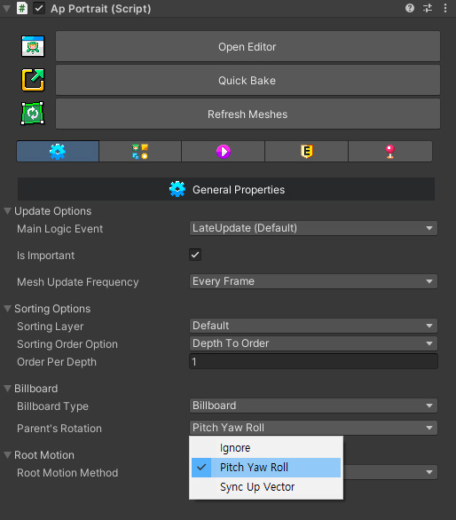
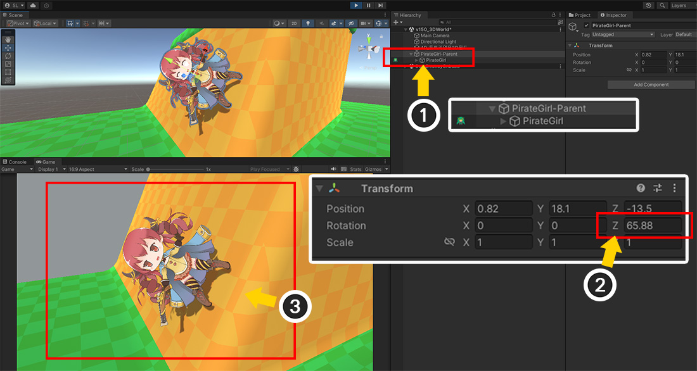
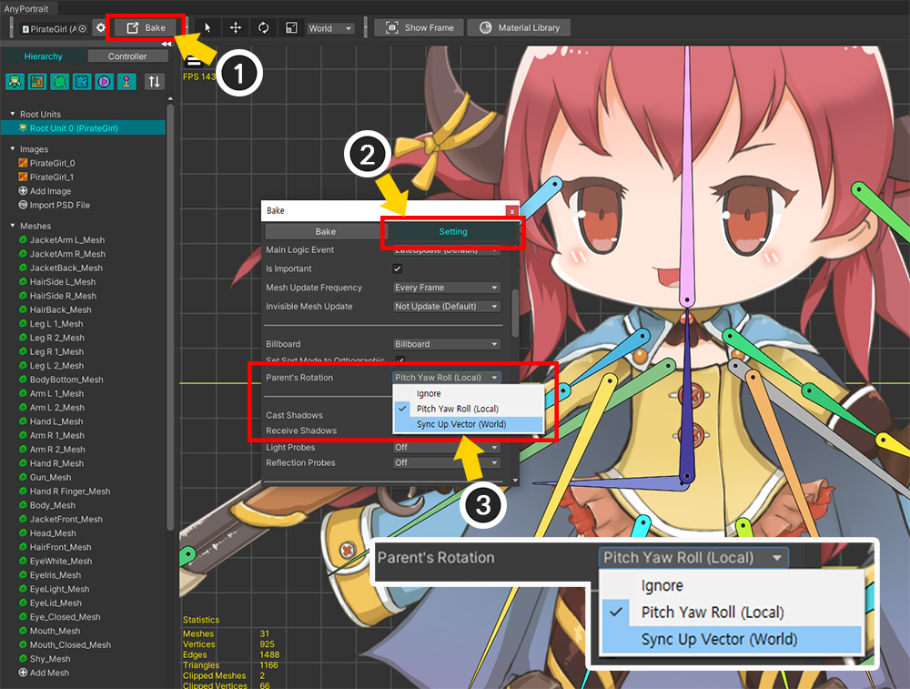

AnyPortrait > 메뉴얼 > 3D 공간에 배치하기
3D 공간에 배치하기
1.5.0

AnyPortrait는 기본적으로 2D 게임을 위한 에디터입니다.
그렇지만 3D 배경에 2D 캐릭터를 등장시키는 등의 다양한 게임 방식에도 사용될 수 있도록 지원하고 있습니다.
이 페이지에서는 3D 게임에서 사용되는 Perspective 카메라에서 AnyPortrait로 만든 캐릭터를 렌더링하는 방법과, 이를 위한 빌보드를 설정하는 방법을 다룹니다.
이 기능을 활용한 "Pirate Game 3D" 데모를 확인해보는 것도 좋습니다.
Perspective 카메라 : 원근감이 있는 카메라입니다. 그 반대는 Orthographic 방식입니다.
빌보드(Billboard) : 항상 카메라를 정면으로 바라보는 렌더링 방식이며, 주로 이펙트에서 사용됩니다.

(1) Bake 다이얼로그를 엽니다.
(2) Setting 탭에서 Billboard 설정을 변경합니다.
- None : 빌보드를 사용하지 않습니다. Perspective 카메라를 지원하지 않습니다.
- Billboard : 빌보드를 사용합니다.
- Billboard with fixed Up Vector : 빌보드를 사용하되, World 좌표계의 Up (+Y) 방향은 유지합니다.
Perspective 카메라를 위한 옵션은 별도로 없습니다.
Billboard 설정이 None이 아닌 경우 렌더링 되는 카메라의 방식을 인식하여 Perspective 카메라도 자동으로 지원됩니다.
(Orthographic 카메라는 빌보드 옵션과 관계없이 모두 지원됩니다.)
주의
Billboard 방식을 사용할 경우, 카메라의 "Camera.transparencySortMode" 속성이 "TransparencySortMode.Orthographic"로 강제로 변경됩니다.
TransparencySortMode가 강제로 변경되는 것을 막으러면, Bake 다이얼로그에서 "Set Sort Mode to Orthographic"의 체크를 해제하세요.

빌보드 설정이 켜지면 게임이 실행될 때 "렌더링을 하는 카메라"를 자동으로 찾고,
그 방향으로 계속 바라보게 됩니다.
카메라가 Orthographic인지 Perspective인지 자동으로 인식한 후, 카메라에 맞게 형태가 보정됩니다.

빌보드 설정 : None
카메라를 바라보지 않으며, 순서대로 제대로 렌더링되지 않습니다.

빌보드 설정 : Billboard
항상 카메라를 바라봅니다.
Perspective라도 정상적으로 렌더링이 됩니다.
카메라가 기울어져도 항상 똑바로 렌더링됩니다.

빌보드 설정 : Billboard with fixed Up Vector
항상 카메라를 바라봅니다.
Perspective라도 정상적으로 렌더링이 됩니다.
Billboard 방식과 다르게 World 좌표계의 Y 방향은 고정되므로, 카메라가 기울어지는 만큼 반대로 기울어져서 렌더링됩니다.
빌보드 회전하기
1.5.0
빌보드 방식으로 렌더링을 하면, 캐릭터는 GameObject의 회전에 관계없이 항상 정해진 규칙으로 카메라를 바라보게 됩니다.
그래서 캐릭터를 회전시키는 것이 불가능했습니다.
그런데 사용자의 제보로 빌보드를 회전시켜야 하는 경우가 있음을 알게 되어 회전 기능을 새롭게 추가했습니다.
빌보드 방식으로 회전하며 카메라를 바라보는 캐릭터를 추가적으로 회전시키기 위해서는 "부모 객체"가 필요합니다.
부모 객체의 Transform의 Rotation 값을 변경하여 캐릭터를 회전시키는 2가지 방법에 대해서 알아봅시다.

3D 공간에 배치된 캐릭터입니다.
빌보드가 활성화되었으며 Perspective 방식의 카메라로 렌더링을 하고 있습니다.
캐릭터가 평지에 있는 경우에는 빌보드가 자연스럽게 렌더링됩니다.

이제 캐릭터를 경사로에 배치해봅시다.
땅이 기울어진만큼 캐릭터가 회전되어야 합니다.

하지만 게임을 실행하면 캐릭터를 아무리 회전시켜도, 캐릭터는 빌보드 규칙에 의해서 위와 같이 똑바로 서서 카메라를 바라봅니다.
빌보드 연산이 World Rotation을 제어하기 때문에, 현재 방식으로는 캐릭터를 회전시킬 수 없습니다.
새롭게 추가된 옵션을 이용해봅시다.

(1) AnyPortrait 에디터를 열고, Bake 버튼을 누릅니다.
(2) Setting 탭을 선택합니다.
(3) Billboard 옵션이 Billboard나 Billboard with fixed Up Vector로 설정된 경우, Parent's Rotation 옵션이 나타납니다.
이 옵션의 값들은 다음과 같습니다.
- Ignore : 부모 객체의 Rotation을 무시하여 기존의 빌보드 방식으로 동작합니다.
- Pitch Yaw Roll (Local) : 부모 객체의 Local Rotation을 Pitch, Yaw, Roll 회전으로 간주하여 캐릭터를 회전시킵니다.
- Sync Up Vector (World) : 부모 객체의 Up 벡터(World)를 이용하여 캐릭터를 회전시킵니다.
일단 "Pitch Yaw Roll (Local)" 옵션을 선택하고 Bake를 합니다.

Inspector에서도 이 옵션을 설정할 수 있습니다.

(1) 유니티 씬으로 돌아간 후, AnyPortrait 캐릭터에 부모 GameObject를 생성합니다.
(2) 부모 GameObject의 Rotation의 Z값을 적절하게 변경해봅시다.
(3) 게임을 실행하면 캐릭터가 빌보드 방식으로 렌더링되고 있음에도 경사로에 맞게 기울어져서 렌더링되는 것을 볼 수 있습니다.

이 옵션은 부모 객체의 Local Rotation의 X, Y, Z 값을 빌보드에 더하여 각각 Pitch, Yaw, Roll 회전을 하도록 만듭니다.
그래서 일반적인 Transform 연산과 다르며, 값에 따라 위와 같이 회전합니다.
- X 회전은 Pitch로 동작하여, 캐릭터가 앞뒤로 기울어집니다.
- Y 회전은 Yaw로 동작하여, 캐릭터가 좌우로 기울어집니다.
- Z 회전은 Roll로 동작하여, 캐릭터가 카메라를 바라본 상태로 빙글빙글 회전합니다.
다만, 캐릭터의 메시들의 Depth에 따른 Z 위치 차이로 인하여, Pitch와 Yaw에서는 렌더링 오류가 발생하므로, Z값에 따른 Roll만 사용하는 것이 일반적일 것입니다.

두번째 방식은, 부모 객체의 Up 벡터를 이용하여 캐릭터를 회전하는 방식입니다.
부모 객체의 World Rotation을 이용할 수 있다는 점에서 앞서 설명한 방식과 다른 특성을 가집니다.
(1) Bake 버튼을 누릅니다.
(2) Setting 탭을 선택합니다.
(3) Billboard 옵션이 활성화된 상태에서 Parent's Rotation의 값을 Sync Up Vector (World)로 변경하고 Bake를 실행합니다.

유니티 씬으로 돌아와서 부모 GameObject를 회전해봅시다.
미리 약간의 스크립트를 작성하여 부모 GameObject의 Up 벡터를 볼 수 있도록 만들었습니다.

부모 GameObject를 회전시켜봅시다.
위의 이미지를 보시면 이 Sync Up Vector 방식이 어떻게 작동하는지 알 수 있습니다.
부모 GameObject의 World 좌표계에서의 Up 벡터를 캐릭터가 Up 벡터로 삼도록 회전하는 것을 볼 수 있습니다.
이때, 캐릭터의 회전은 오직 Roll 방식으로 동작합니다.
또한 이 방식에서는 Billboard 옵션 중 Billboard와 Billboard with fixed Up Vector이 동일하게 동작합니다.
주의
만약 Up 벡터가 카메라의 Forward 벡터와 평행하다면, 캐릭터의 회전이 비정상적으로 동작합니다.